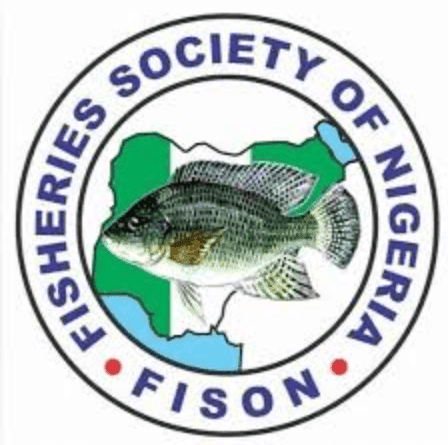

Ẹgbẹ Ọjọgbọn fun Awọn Agbẹ Ẹja ati Awọn Akosemose Ẹja
Fisheries Society of Nigeria (FISON) jẹ ẹgbẹ ọjọgbọn ti o dojukọ ilosiwaju ogbin ẹja ati aquaculture ni Naijiria. Pẹlu wiwa to lagbara ni Yola ati ipinlẹ Adamawa, FISON n ṣiṣẹ lati ṣe igbega awọn ilana oko ẹja ti o ni ẹtọ alagbero, mu igbesi aye awọn agbẹ ẹja pọ si, ati ṣe alabapin si aabo ounjẹ. Ẹgbẹ naa kojọpọ awọn agbẹ ẹja, awọn akosemose ẹja, awọn onimọ-jinlẹ, ati awọn oloselu lati pin imọ, ṣiṣẹda awọn ilana to dara julọ, ati ṣe agbawi idagbasoke ile-iṣẹ ẹja ni agbegbe.